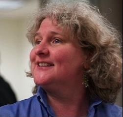
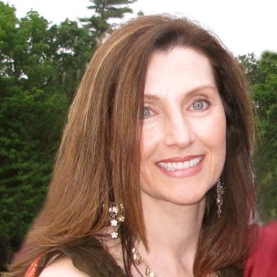
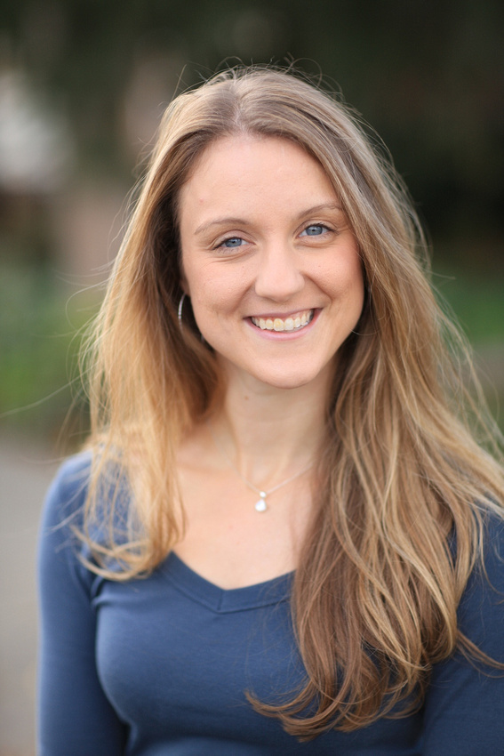

Women Engineers Code 2014
WECode is a conference for collegiate women interested in Computer Science. Saturday, February 8th is a general session consisting of speakers, hands-on workshops and other smaller break-out activities. Sunday, February 9th is a hackathon. Conference participants can register for either or both days, and breakfast and lunch will be served on the 8th and the 9th. Workshops and break-out activities will be led by our sponsors-- including Facebook, Intuit, Google, Microsoft, and Qualcomm-- and smaller companies from the Boston area. We look forward to seeing you in February!
Meet our keynote speakers:
Rebecca Parsons
 Rebecca has more than 30 years' application development experience in industries ranging from telecommunications to emergent internet services. She has extensive experience leading in the creation of large-scale distributed object applications, services based applications and the integration of disparate systems. She spent time at Los Alamos National Laboratory researching programming languages for parallel and distributed systems as well as the application of evolutionary computation to problems in computational biology. She continues to have a strong interest in programming language design and implementation, particularly as it relates to scientific and distributed computation.
Ann Wollrath
 Ann Wollrath is a Senior Software Developer with Ab Initio where she specializes in all things Java and Hadoop, as well as dabbles in language runtime systems. Previously, at Sun Microsystems, she was the architect and project lead of the Java Remote Method Invocation system (the Java core library java.rmi) and was one of the architects of the Jini technology. Also while at Sun Microsystems Laboratories and at the MITRE Corporation, she researched reliable, large-scale distributed systems and parallel computation. Ann received an M.S. in computer science from the University of Massachusetts, Lowell, and a B.S. in computer science from Merrimack College.
Min Wang
 Dr. Min Wang is a Senior Staff Research Scientist at Google Research and she leads the Knowledge
Integration and Inferencing team. Her previous appointments include HP Distinguished Technologist
and Director of HP Labs China and Research Staff Member and manager of the Unified Data Analytics
Department at IBM's Thomas J. Watson Research Center. Her research interests are in database
systems and information management. In 2009, she received the ACM SIGMOD 2009 Test of Time
Award for her 1999 SIGMOD paper, "Approximate Computation of Multidimensional Aggregates of
Sparse Data Using Wavelets". She received her Ph.D. degree in Computer Science from Duke University
and the B.S. and M.S. degrees, both in Computer Science, from Tsinghua University, Beijing, China.
Dr. Min Wang is a Senior Staff Research Scientist at Google Research and she leads the Knowledge
Integration and Inferencing team. Her previous appointments include HP Distinguished Technologist
and Director of HP Labs China and Research Staff Member and manager of the Unified Data Analytics
Department at IBM's Thomas J. Watson Research Center. Her research interests are in database
systems and information management. In 2009, she received the ACM SIGMOD 2009 Test of Time
Award for her 1999 SIGMOD paper, "Approximate Computation of Multidimensional Aggregates of
Sparse Data Using Wavelets". She received her Ph.D. degree in Computer Science from Duke University
and the B.S. and M.S. degrees, both in Computer Science, from Tsinghua University, Beijing, China.
Kimber Lockhart
 Kimber Lockhart is the Senior Director of Web Application Engineering at Box, leading the web and core engineering teams. Previously, she co-founded Increo, a web-based service that allows users to share and review documents in a secure space. Increo was acquired by Box in 2009. In her free time, Kimber enjoys training on the aerial rope and flying trapeze. She holds a B.S. in Computer Science from Stanford University.